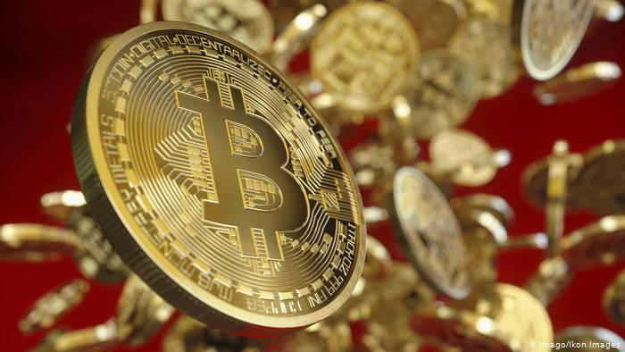
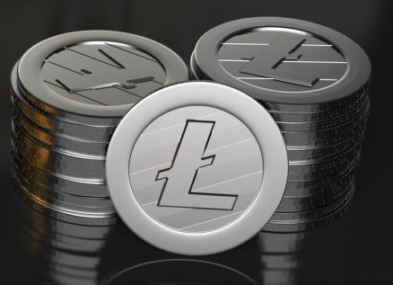
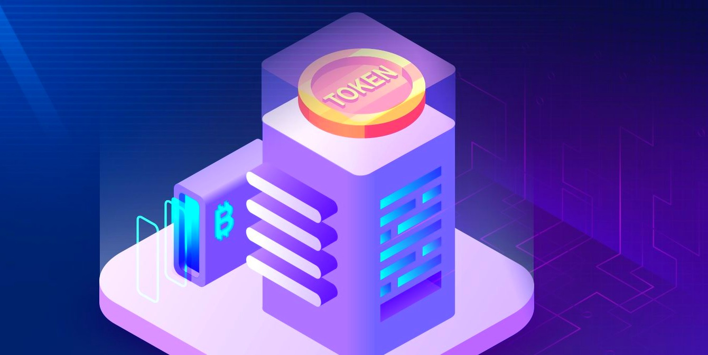

Криптовалюты — это разновидность альтернативных валют. В отличие от множественных электронных денег и финансовых инструментов, криптовалюты децентрализованы, а это означает, что они не контролируются правительством какого-либо государства или организацией. Также криптовалюты являются одноранговым инструментом (P2P), что позволяет отдельным пользователям покупать и продавать товары друг другу напрямую, без посредничества сторонних организаций, таких как, например, крупные банки.
Некоторые криптовалюты являются анонимными, но это не является их общей чертой.
Если мы рассмотрим основные криптовалюты, то обнаружим, что их всех объединяет набор базовых технологий и концепций, которые позволяют брать на себя ответственность (т.е. организовывать платежные сервисы, — прим. ред.) и отслеживать транзакции между банками и пользователями.
Разновидности криптовалюты
Каждая из существующих монет попадает в одну из трех основных категорий. Бывают альткойны, токены и биткойны.
Биткойн
BTC – первая криптовалюта, ориентированная на блокчейн. Домен был зарегистрирован в 2008 году Сатоши Накамото, загадочной личностью и культовым персонажем в криптосообществе.
Несмотря на известность и шумиху вокруг Биткойна, как потенциального инструмента оплаты в будущем, сейчас он не принимается в качестве платежа, как фиатные деньги.
Фиатная валюта – это деньги, которые выпускает и контролирует государство. Государство устанавливает и гарантирует ее стоимость независимо от цены материала на котором она изготовлена.
Как и другие валюты, Биткойн содержит некоторые ключевые риски о которых следует помнить: значительные колебания цены во время торговли и внешний риск того, как он будет регулироваться. Это новая концепция, которую пытаются продвинуть правительства во всем мире с целью безопасности потребителей.
Это всего пара рисков, но важно помнить о них всякий раз, когда думаете об инвестициях в криптовалюты.
Альткойны
Выпуск Биткойна и его открытого исходного кода в 2008 году проложил путь к созданию тысяч других криптовалют. Эти новые монеты были названы «альтернативными монетами» или «альткойнами», поскольку они являются альтернативами биткойнам. Вот некоторые примеры альткойнов, которые имеют большую рыночную капитализацию:
- Litecoin (LTC). Созданный выпускником MIT в 2011 году, Litecoin был одной из первых криптовалют, появившихся после Биткойна. Litecoin известен тем, что генерирует новые блоки в более быстром темпе, что позволяет ускорить транзакции.
- Ethereum (ETH) моложе, чем биткойн или лайткойн. Эфириум был создан в 2015 году, а интересен тем, что программирует блокчейн и запускает приложения, называемые DApps и интеллектуальные контракты. Они зависят от типа токена, уникального для Ethereum, называемого ether. Сам «эфир» - кусок кода, который действует как валюта, требуемая разработчиками приложений или инвесторами. Это цифровой платеж, необходимый для «оплаты» за запуск приложения или программы.
- Ripple (XRP) запустили в 2012 году. Ripple - это скорее сеть, которая осуществляет немедленные и с минимальной комиссией платежи. Ее цель – отправка денег по всему миру. Именно эта способность сделала ее особенно актуальной для банков, желающих урегулировать международные транзакции. В отличие от биткойнов, Ripple не требует майнинга, поэтому использует меньше вычислительной мощности, чем некоторые другие альткойны.
Это лишь некоторые из альткоинов, существуют и другие, часто создаются новые.
Токены
В отличие от биткойнов и альткойнов токены не могут самостоятельно существовать. Они зависят от сети другой криптовалюты. Это означает, что у токенов нет собственного блокчейна, они построены поверх имеющейся цепочки блоков.
Вот несколько известных примеров разных типов криптовалют, на которых размещаются токены:
- Ethereum. На платформе Ethereum на данный момент установлено больше всего токенов.
- Omni - Tether (USDT). Каждый блок поддерживается долларами США, при курсе 1 к 1. Особенно интересен сервисам, которые не могут принимать USD.
- NEO часто называют китайским конкурентом Ethereum, как платформу для умных контрактов и DApps. TRON. Ведущая платформа для DApps.
- TRON имеет множество развернутых токенов, включая BitTorrent Token (BTT), который можно использовать для ускорения загрузки по протоколу обмена файлами BitTorrent.
Топ-5 токенов по рыночной капитализации - это Tether, UNUS SED LEO, Chainlink, Huobi Token и Maker. Все они размещены на блокчейне Ethereum, кроме Tether, который лидирует.